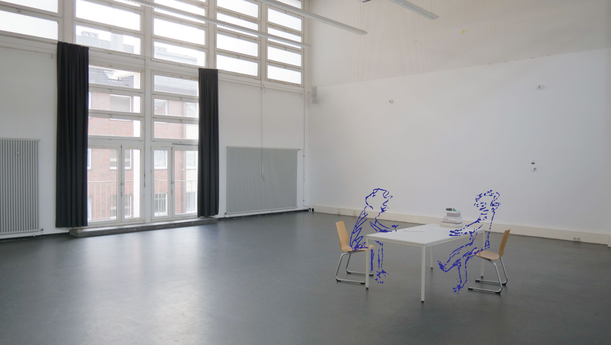

This item covers the preparation of the first session, how it went with the individual participants and some first reflections. The idea of meeting the participants for the first time felt like getting ready for the first day of school. But then, I was the one welcoming them into my project. What to do in the first session? Evidently, I was ready to introduce myself, give context to the project and discuss my plans, expectations and role. Since the working space is inside the school building, there was no way to avoid sharing that this is part of my MA Thesis project at KISD. I haven’t even mentioned that anywhere on this process blog I believe. Well, in the original invitation I introduce myself as an MA student at KISD. But I knew that some wouldn’t fully grasp that and it would require more explanation.
Thus, I prepared a script which would cover the context and motives for this project and installed a moment to answer questions and listen to concerns the participants might have. Regarding the structure of the sessions, I’d express that I am intending to be led by the interests and ambition of the participants, but that there has to be an outcome by the end of the process.
Subsequently, the most important part of the session would take place, simply listening to what the participants had to tell. Realising that the willingness to share would vary from person to person, meant that I prepared several questions to assure I’d retrieve equal information from each participant.
"Ich hab Bock auf nur Schönes." - A quote by one of the participants. I had to disappoint as the only guarantee that I can give is that it will be difficult and strange at times.
One question that I’ve asked everyone, is what my mother calls the ‘Wunderfrage’. It was her who gave me that input. The ‘Wunderfrage’ is a classic coaching question in which someone is asked to envision the outcome of a process, in our case, the outcome of the 8 sessions. Visualising a moment of success helps to sense what the desired outcome might be.
I’d let the participants imagine a scenario where we have just finished the last session, I thank them for the participation and they thank me for the support. Now, what has happened in the process? What are you taking away from OES?
Already in the first session, I wanted to take the opportunity to do something out of the ordinary, that goes beyond a one on one conversation. Moving our butts! Preparing several movement exercises that are easy and can be executed by anyone, to make contact with what we could be doing in the next sessions and step a little out of the comfort zone.
Eventually, each meeting went different. And as the first meetings took place, I became more confident and developed a flow of sharing, listening and doing. With some, there was time left to dance. With others, that time was needed to listen to their story. Depending on whether the participant had a specific goal in mind, I would ask to write down answers to questions like “When thinking about the kind of music you'd like to bring, what kind of feelings would you want to generate among people?” Or I would ask them to make a mindmap of the things they’re fascinated by. Nearly all participants managed to give an answer to the Wunderfrage, mentioning things such as experiences, (soft) skills and deliverables.
In terms of homework, I have asked some participants to gather visual impulses that represent phenomena, objects or observations they made and find intriguing. To assemble a kind of mood board that can be expanded throughout the process. And to help find a beginning. With others, I ended up exchanging short stories, fragments of written observations that we made in the past. This direct exchange would foster the idea of mutual support and feedback in OES. Depending on the homework, I framed it as a task that would require just one moment of reflection and preparation, whether that was 10 minutes or 2 hours, where the outcome of that moment could be taken to the next session.
After seeing the participants, I sent individual emails, recapping what we have discussed, repeating the homework and ending with an outlook on the next meeting. Although I had planned to make an audiorecording of our conversations, I ended up taking only notes as I wanted the environment to be welcoming. In all honesty, I found it too difficult to ask right at our first encounter.
These are some of the patterns and realisations that became evident:
- Each of the 5 women has pursued some kind of formal education or apprenticeship in the human sciences, specifically psychology.
- There is a common desire among all participants to consistently engage in some form of creative activity and build creative habits.
- Generating output and therefore showing oneself is considered important.
- There is the belief that the act of expression is healing and that it's a skill that can be trained.
- All participants want to learn different ways to get into a creative process.
- Everyone is willing to be challenged and even requests to be (safely) pushed out of their comfort-zone.
- Everyone involved shows a high level of motivation. (YIHAAA)
- Most participants experience some kind of block when it comes to body movement.
As I'm writing this down, I understand that it's my personal interpretation of what they have told me. In order to verify those assumptions, I could hand them a questionnaire.
Because of the last observation, that most participants experience some kind of block when it comes to body movement, I decided to make that a part of every session, for everyone. That would be the first structural element to emerge in the process, shaping the upcoming sessions and becoming a major element in my research. What I learnt from talking to the participants, no-one was eager to work around body movement but everybody agreed it would do them good.
"Does the body rule the mind or does the mind rule the body? I dunno..." - Morrisey
With the room being almost completely empty, you are invited to move around in it! Imagine only sitting at that one desk? That would be a missed opportunity. Beginning each session with a focus on the body for 20-30 minutes would allow the participants to arrive in the room and arrive in the body (or beautifully said in German: "in den Körper einsteigen"). And it would allow me to test out different things ranging from meditative exercises to dance-improvisation techniques, to more theatre like improvisation, to mime, to ... To foster a culture within the sessions in which bodily expression is embraced.